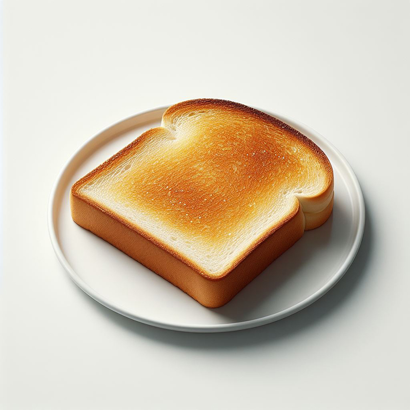

A toast
A Delicious Toast!
Elevate your breakfast or snack game with this easy and delicious single toast recipe. Perfectly crisp on the outside, warm and fluffy on the inside, it's a delightful treat in its purest form.
Ingredients
- One slice of your favorite bread
Recipe instructions
- Toast the Bread: Place a slice of your preferred bread in a toaster or toaster oven. Toast it to your desired level of crispiness.
- Serve Immediately: Transfer the freshly toasted bread to a plate. Enjoy it while it's warm, highlighting the toasty aroma and texture.
- Savor Every Bite: Take a bite and appreciate the straightforward deliciousness of this plain toast. The combination of a crispy exterior and soft interior is a culinary delight on its own.
This plain and delicious toast celebrates the essence of simplicity. Enjoy it as a quick and satisfying snack or a versatile base for your favorite toppings when you're in the mood for something extra.
Return to main page